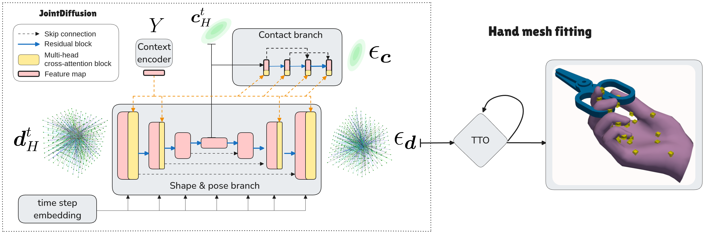

Teaser: CHOIR Hand-Object Interaction Field
Teaser: CHOIR Hand-Object Interaction Field
Abstract
Synthesizing accurate hand–object interactions (HOI) is critical for AR/VR and vision tasks.
Existing dense–correspondence methods improve contact fidelity but lack full differentiability or generality.
We propose CHOIR, a versatile, fully differentiable interaction field:
- Unsigned distance fields encode hand & object shapes continuously.
- Gaussian contact maps capture dense hand-centric contact distributions with few parameters.
We integrate CHOIR into JointDiffusion, a diffusion model that learns CHOIR distributions for both:
- Refinement: improves noisy reconstructions (contact F1 ↑ 5%).
- Synthesis: generates grasps from object geometry alone (sim. displacement ↓ 46%).
JointDiffusion+CHOIR outperforms SOTA on refinement and synthesis benchmarks.
Teaser
CHOIR jointly represents hand and object geometries via unsigned distance fields, and captures hand-centric contact distributions with 3D Gaussians—enabling a fully differentiable and versatile hand-object interaction model.
Results Carousel
Scissors
Mug
Knife
Apple
Banana
Binoculars
Bowl
Camera
Cell Phone
Cup
Eyeglasses
Method Overview
Static Grasp Denoising
Comparison: Denoising on Perturbed ContactPose
Static Grasp Synthesis
Reuses the above carousel of 11 object-specific grasp synthesis videos.
BibTeX
@article{morales2024choir,
author = {Morales, Théo and Taheri, Omid and Lacey, Gerard},
title = {A Versatile and Differentiable Hand-Object Interaction Representation},
journal = {Winter Conference on Applications of Computer Vision (WACV)},
year = {2025},
}
Omid Taheri
PostDoc Researcher
Passionate about creating Virtual Humans that move and interact with their environment like Real Humans.